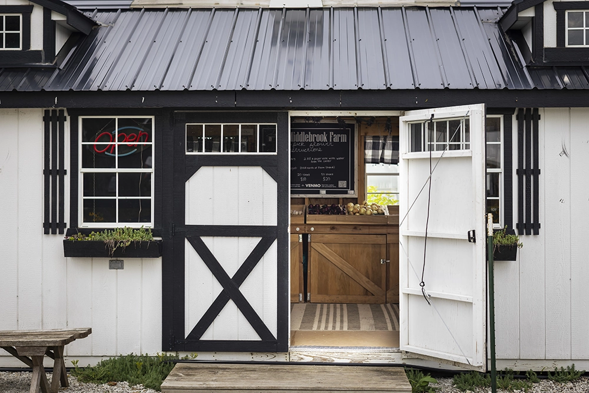

Shop Our Fresh Produce
We offer a diverse range of produce and plantings vary by season, all grown right here in Middlebrook following organic gardening practices. Fresh produce and eggs are available seasonally at the Middlebrook Farm Stand, and plant starts are offered during our annual spring plant sale in May.
Farm Stand hours and payment